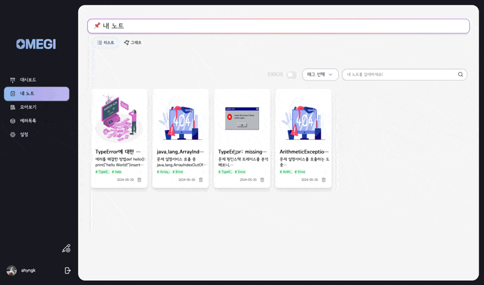
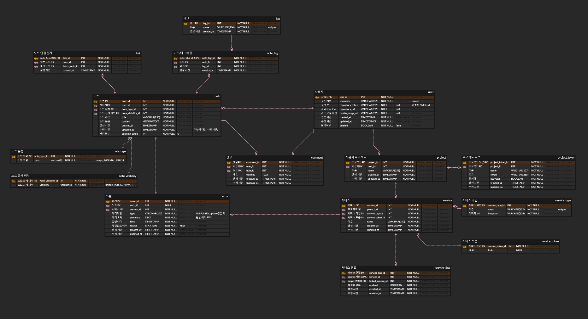
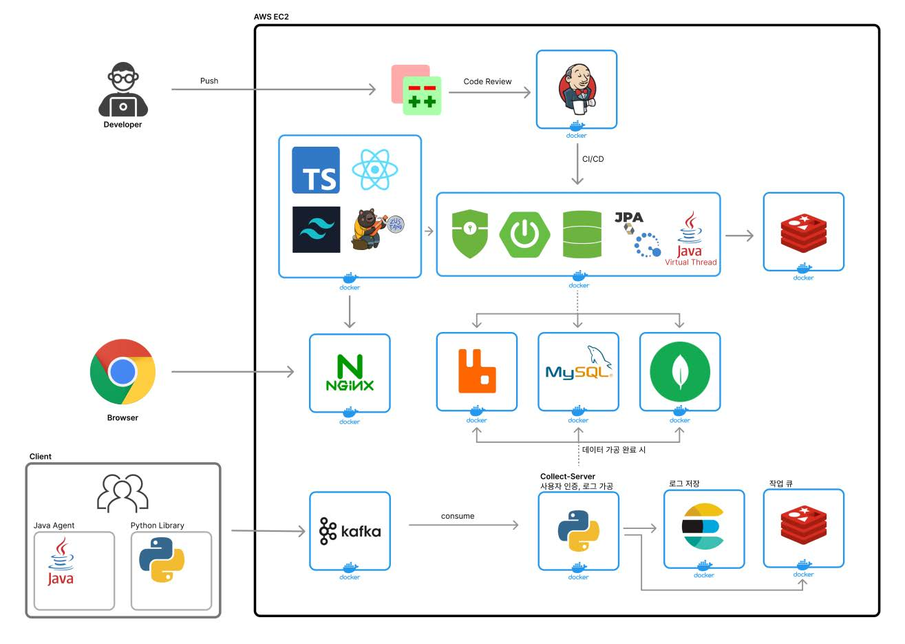
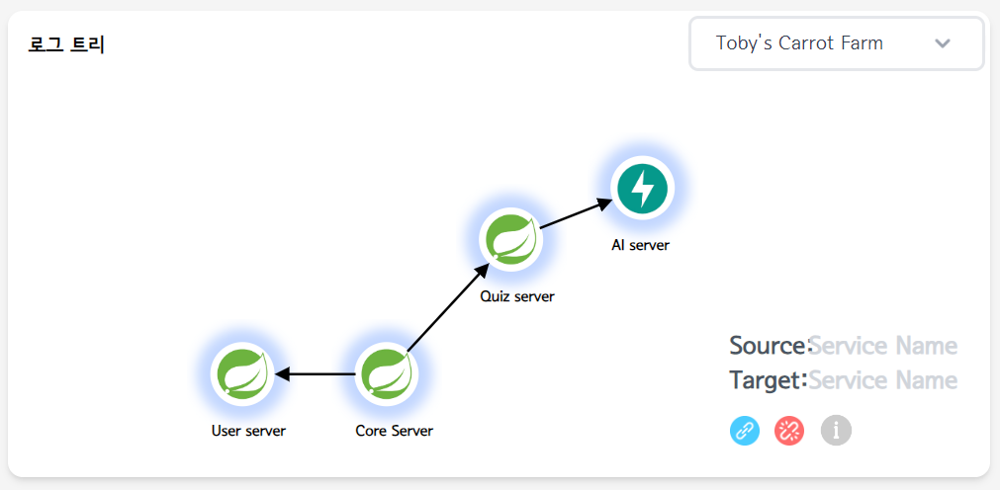
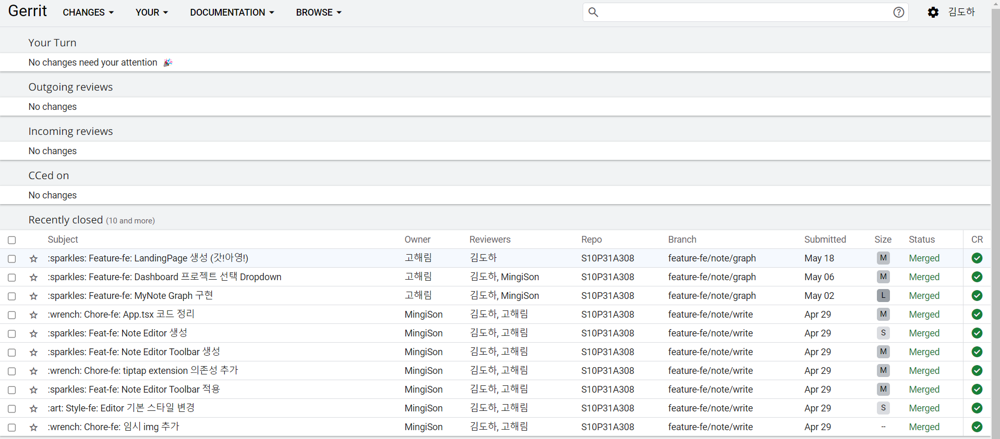

_Omegi_
| 항목 | 내용 | ||||||||
|---|---|---|---|---|---|---|---|---|---|
| 기간 |
|
||||||||
| 사용 기술 |
|
||||||||
| 한 줄 설명 | 오류를 자동으로 추적 및 분석하며, 해결 과정을 노트로 남길 수 있는 서비스 | ||||||||
| 개발 인원 |
|
||||||||
| Github | https://github.com/TeamOmegi |
🎁 UI



📖 프로젝트 소개
실시간으로 사용자의 서비스 로그를 수집하고 에러 노트를 작성할 수 있는 서비스입니다.
사용자의 프로젝트별로 대시보드, 에러 목록, 노트 기능을 제공합니다.
서비스 간 요청의 흐름을 보여주는 Trace, 에러 요약인 Summary, 에러 원문인 Log로 에러를 상세하게 구성했습니다.
사용자의 서비스에서 사용할 수 있는 로그 계측기를 지원합니다.
기술 특장점
- SSE를 통한 실시간 알림 기능을 제공하여 사용자의 서비스에서 에러 발생 시 알림이 표시됩니다.
- 사용자는 코드의 수정 없이 Java 및 Python 자동 계측기를 통해 로그를 내보낼 수 있습니다.
- D3 그래프를 사용해 노트 간 연결을 시각화했습니다.
🙋♂️ 담당 기능
Java Instrumentation 제작
로그 수집·가공·저장 파이프라인 구축
정상 응답 가공 및 전송 로직 구현
서버 인프라 구축
🎠 ERD
🧵 시스템 아키텍처
- 하나의 요청과 관련된 모든 로그가 수신될 때까지 Kafka 메시지를 Elasticsearch에 저장하고, Redis 작업 큐에 작업을 올려둡니다
- 로그 수신이 완료되면 가공하여 MongoDB에 에러 데이터를, MySQL에 에러 정보를 저장합니다
- RabbitMQ로 메인 서버에 새로운 에러 발생을 알립니다
🎯 기술 리뷰
1. JavaAgent를 활용한 ‘자동 로그 관측기’ 제작
Github Link : https://github.com/TeamOmegi/Instrumentation-Java

기존에 존재하는 OpenTelemetry의 JavaAgent 자동 관측기를 새로 구성하여, 저희프로젝트 취지에 맞는 새로운 자동 관측기를 제작했습니다.
새로운 기능 :
(1) 단순 모니터링을 넘어, 왜 오류가 발생했는지를 파악하는 Observability의 본질에 충실한 오류 추적 기능을 넣고 싶었습니다. OpenTelemetry는 기본적으로 요청이 처음 들어온 메소드, DB 접근 등에 대해 로그를 제공합니다. 이를 확장해 요청이 흘러가는 모든 메소드를 관측하여 오류의 원인을 쉽게 파악할 수 있게 만들었습니다. 바이트 코드 조작 도구인 ByteBuddy를 활용해 메소드의 정보, 파라미터 타입, 아규먼트를 로그에 담았으며, 그 외에도 오류 발생 지점, 구체적인 오류 내용을 담은 상세한 로그를 구상했습니다.
(2) OpenTelemetry는 이미 OTLP, Jaeger, 콘솔 등 다양한 Exporter를 지원하고 있었지만, 저희 프로젝트와의 연동을 위해 Kafka Exporter를 추가했습니다.
(3) OpenTelemetry에서 추적 정보를 전파하는 Propagator를 활용해 요청이 다른 애플리케이션으로 이동한 경우에도 해당 요청의 정보를 전달받을 수 있도록 구성했습니다. 이를 통해 MSA와 같은 분산 환경과 Java -> Python 등 다른 언어 기반 애플리케이션으로 요청이 이동할 때도 하나의 요청을 하나의 정보로 일관되게 유지했습니다.
(4) 사용자가 자신의 애플리케이션을 전혀 수정하지 않아도 되도록 JavaAgent 적용 시 넣어줄 수 있는 사용자 옵션(로그 내보내기 방법, 로그를 보낼 서버, 오류 외 정상 로그 내보내기 여부, 정상 로그 수집 빈도 등)을 제공해 자동 관측기를 완성했습니다.
어려웠던 점 :
가장 큰 난관은 OpenTelemetry의 JavaAgent를 커스터마이징하는 방법을 찾는 것이었습니다. 개발 가능 여부가 불확실하여 사흘의 검증 기간을 설정하고 레퍼런스를 조사했습니다. Github의 여러 코드를 분석하며 JavaAgent의 구성, 빌드 의존성, 메타 정보 수정 방법 등을 알아냈습니다.
이 프로젝트를 통해 두 가지를 깨달았습니다. 첫째, 개발 가능성이 불확실할 때 적절한 검증 기간을 설정하는 것의 중요성입니다. 만약 개발에 실패했더라도 빠르게 다른 방향을 모색할 수 있었기 때문입니다. 이는 프로젝트 관리와 팀워크 측면에서도 중요한 교훈이 되었습니다.
둘째, 다양한 레퍼런스 확보의 중요성입니다. 단순히 코드를 수정하고 실행해보는 시행착오 방식으로는 진전을 이루기 어려웠습니다. OpenTelemetry에 국한되지 않고 JavaAgent를 다루는 다양한 오픈소스 프로젝트들을 탐색하면서 JavaAgent의 빌드 방법, 사용자 옵션 추가 방법 등의 정보들을 발견할 수 있었습니다. 이로써 무에서 유를 창조하는 것이 아니라 기존의 다양한 지식과 경험을 새로운 맥락에서 재해석하고 조합하는 것이 핵심이라는 교훈을 얻었습니다.
2. 로그 수집·가공·저장 파이프라인 구축 - Batch 및 Scheduler 도입
에러 로그를 다루는 서비스이지만, 사용자의 선택에 따라 정상 응답 로그를 수집합니다. 프로젝트에서 정상 응답 로그는 사용자 애플리케이션의 서비스 흐름도를 갱신하는 역할을 합니다. 오류 로그로만 서비스 트리가 갱신된다면, 오류가 발생하지 않는 신규 서비스는 트리에 등록되지 않기 때문입니다. 때문에 정상 응답 로그를 간헐적으로 내보내는 설정을 주고 서비스 트리에 이를 반영했습니다.
이러한 특징 때문에 하나의 요청에 관련된 모든 로그가 도착했는지를 확인하는 방식을 오류 로그와 다르게 처리했습니다.오류 로그는 Redis 작업 큐를 활용해 모든 로그가 도착했는지 자주 빠르게 확인한다면, 정상 로그는 배치와 스케줄러를 사용해 비교적 느리게 지정된 간격마다 처리했습니다.
Kafka Producer는 사용자 지정 간격에 따라 서비스 정상 로그를 내보내며, 1MB의 Max Batch Size로 모아서 처리됩니다. 한 개의 정상 로그가 수집 서버로 들어오면 ElasticSearch에 저장 후 스케줄을 등록합니다. 지정된 시간 후 ElasticSearch에 같은 요청 번호를 검색하고 요청이 하나의 흐름으로 연결된다면 서비스 흐름 엔티티를 확인해 갱신합니다.
3. Kafka Consumer 확장
비록 실사용자가 없는 프로젝트였지만, 사용자를 가정하고 여유 메모리 1GB 안에서 Kafka의 성능을 높여보는 고민을 해보고 싶었습니다. 기존에는 단일 컨슈머 스레드를 두고 있어 1초에 약 400개의 메시지 밖에 처리할 수 없었습니다.
데이터의 크기를 10KB로 가정하고 Consumer Thread를 1개 늘릴 때 약 60MB 메모리를 더 사용하는 것으로 계산했습니다. 컨슈머 스레드와 파티션을 5개로 두었을 때 1초에 약 927개의 메시지를 소비할 수 있으며, 메모리 사용량은 약 300(Thread) + 32(Buffer) + 20MB(Segment & Index) = 352MB입니다.
10개 스레드는 5개 대비 메모리를 2배 사용하지만, 성능은 19% 정도만 향상되기 때문에 효용을 고려해 5개의 컨슈머를 두기로 결정하였습니다.
[Gerrit 리뷰 자동 기록]
Google에서 개발한 코드 리뷰 툴인 Gerrit을 활용하여 프로젝트의 코드 리뷰를 하였습니다. 그러나 서버가 사라지면 코드 리뷰 내역도 사라진다는 아쉬움이 있어 리뷰를 기록하는 Jenkins 파이프라인을 구성했습니다. Gerrit에 Open된 커밋이 Merge 되면 커밋 메시지 및 리뷰를 환경 변수에서 가져와 내용을 가공한 후 리뷰용 레포지토리에 발행하여 코드 리뷰를 저장할 수 있었습니다.